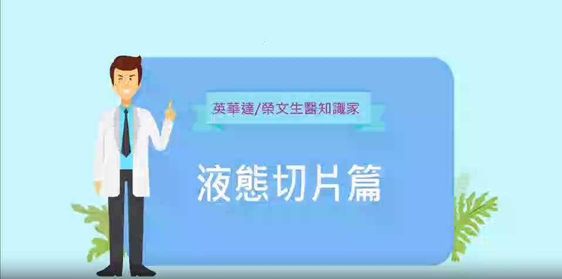

年代電視台【發現新台灣】節目專題報導
透過節目專題形式，快速理解榮文生醫如何把循環腫瘤細胞檢測帶進臨床與大眾溝通場景。
收錄目前公開的節目專題、知識短片與講座片段，方便依主題快速查看榮文生醫的影音內容。
目前公開 7 支影片
透過節目專題形式，快速理解榮文生醫如何把循環腫瘤細胞檢測帶進臨床與大眾溝通場景。

以知識影片方式整理 CTC 的核心概念，適合第一次接觸循環腫瘤細胞檢測的讀者先建立基本認識。

從廣播講座脈絡出發，說明 CTC 在精準健康管理與追蹤上的意義，幫助理解檢測使用情境。

由臨床觀點談液態切片與癌症篩檢，補足影像檢查之外，血液檢測在追蹤與早期警示的價值。

以短片整理循環腫瘤細胞與健康檢測觀念，作為快速理解榮文生醫服務脈絡的影音入口。

透過活動短片回看團隊與合作夥伴在智慧醫療推廣與溝通現場的交流內容與實際展示。

以早餐會分享形式介紹循環腫瘤細胞檢測，協助醫療與企業端快速掌握應用脈絡與導入場景。